Café Vagar apresenta
uma pausa em cinco atos
Rua das Flores, 128, Florianópolis
O tempo passa.
O café fica.
Há dias que pedem pressa.
Outros pedem café.
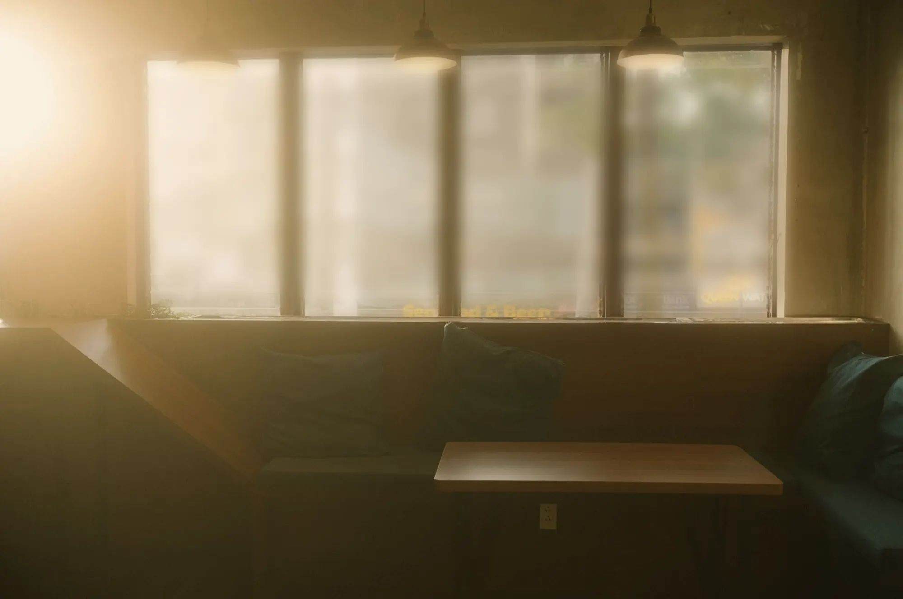
Não é só sobre tomar um café. É sobre encontrar um lugar onde você não precisa olhar para o relógio.
-
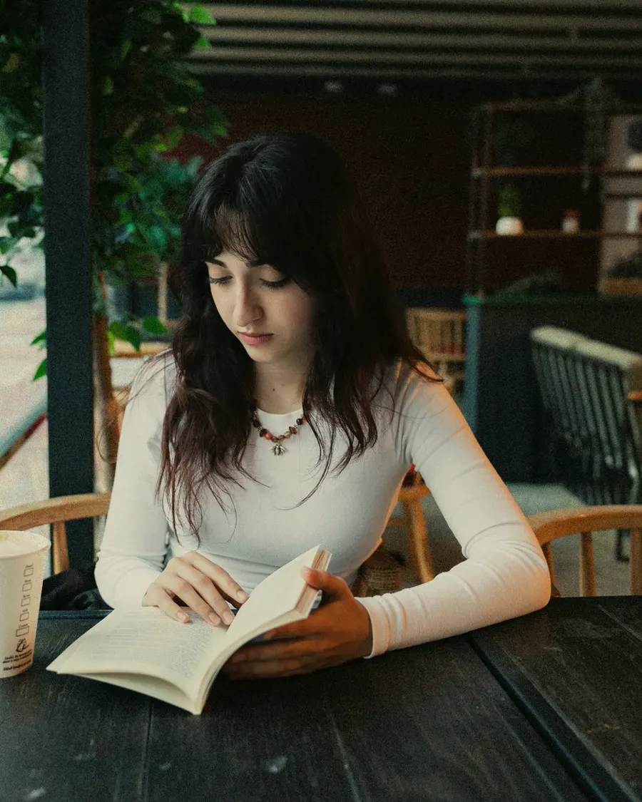
O silêncio
As mesas da janela são de quem chega sozinho. Tem wi-fi, mas quase ninguém lembra de pedir a senha.
-
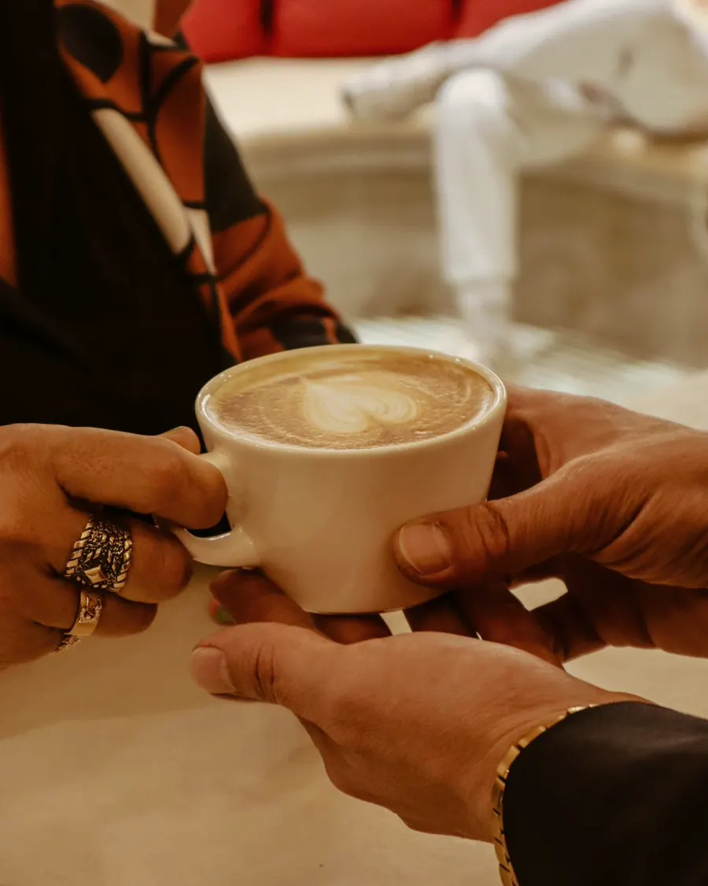
A conversa
A mesa grande do fundo cabe oito. Costuma terminar a tarde com mais gente do que começou.
-
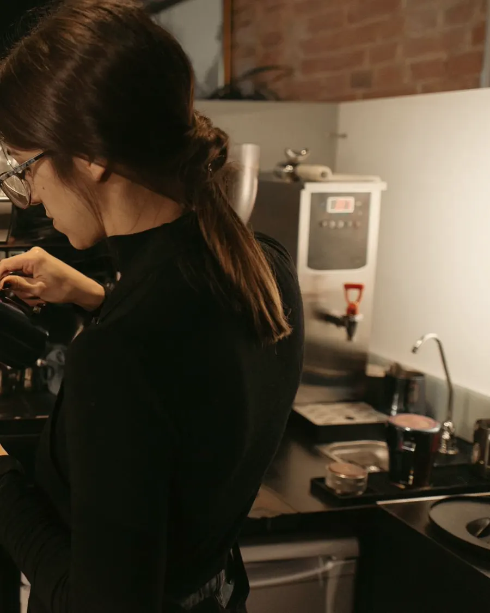
O ritual
O grão é moído na hora do pedido, nunca antes. Do balcão dá para acompanhar tudo.
O ritual
- 00:00O espresso descansa na xícara.
- 00:20O leite entra devagar, rente à borda.
- 00:45Pronto. Agora é com você.
Poucas coisas, feitas com tempo.
Cardápio e preços fictícios, criados para esta demonstração.
-
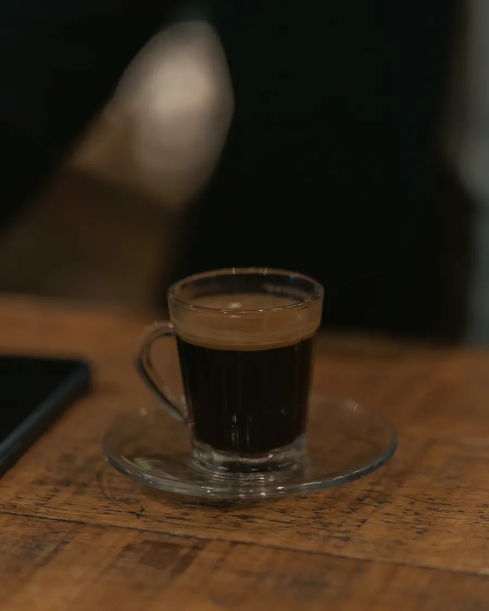
Espresso da Casa
Café especial, notas de chocolate amargo e caramelo.
R$ 9
-
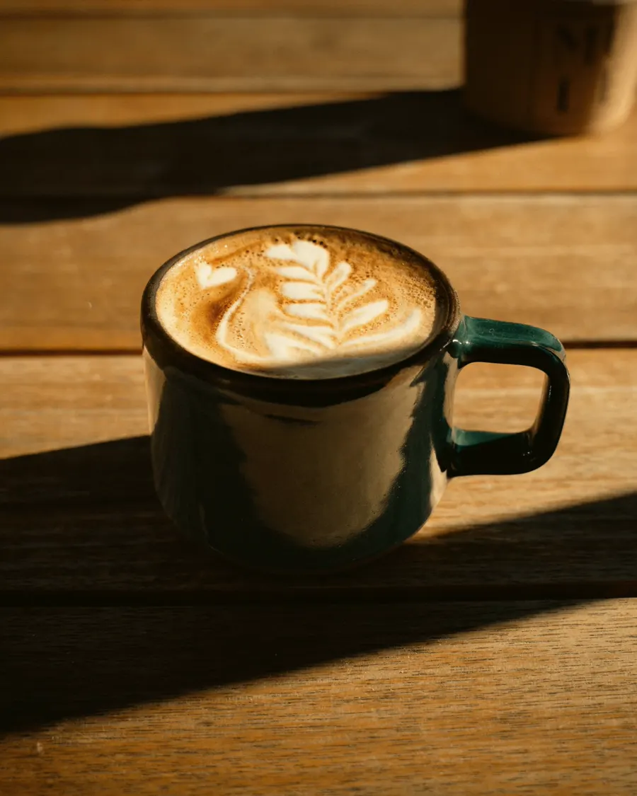
Flat White
Duplo espresso com leite texturizado.
R$ 15
-
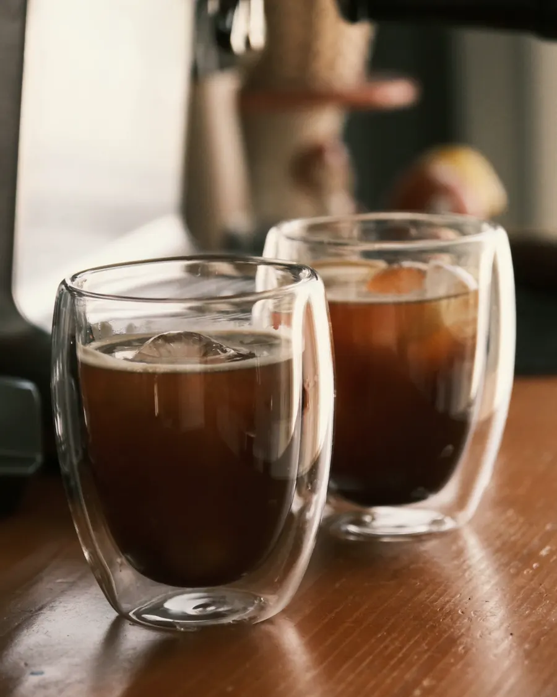
Cold Brew
Extração lenta, notas cítricas e finalização suave.
R$ 16
-
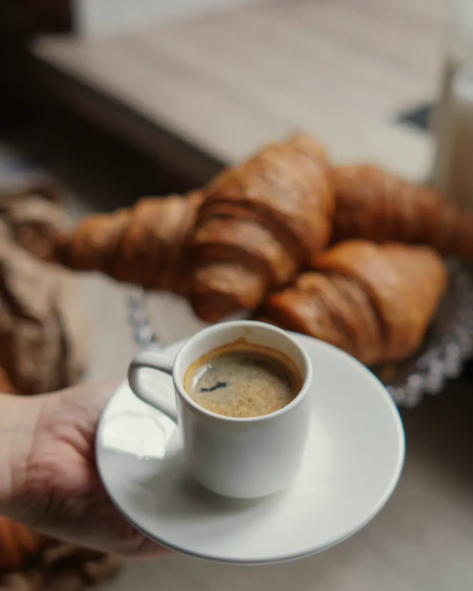
Croissant de Manteiga
Folhado, dourado e feito para acompanhar um espresso.
R$ 13
-
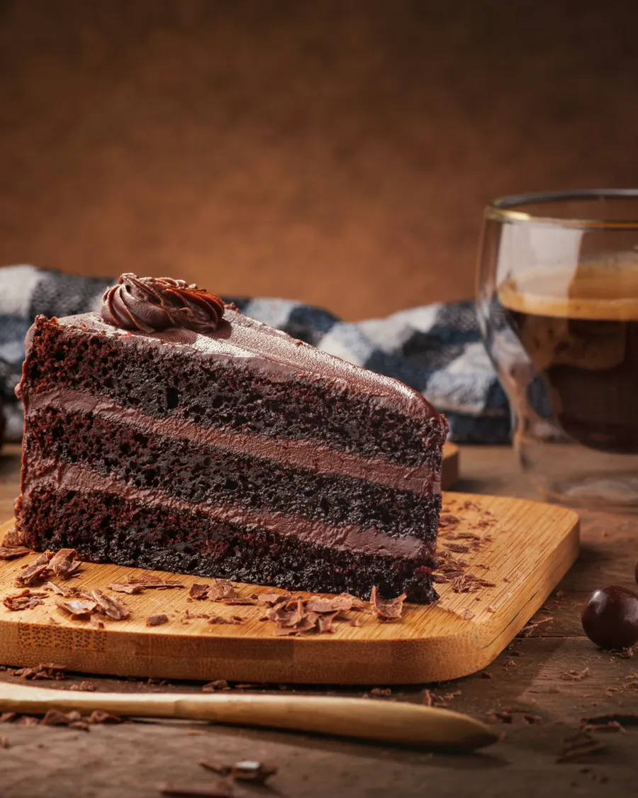
Bolo de Cacau
Massa úmida com ganache meio amarga.
R$ 17
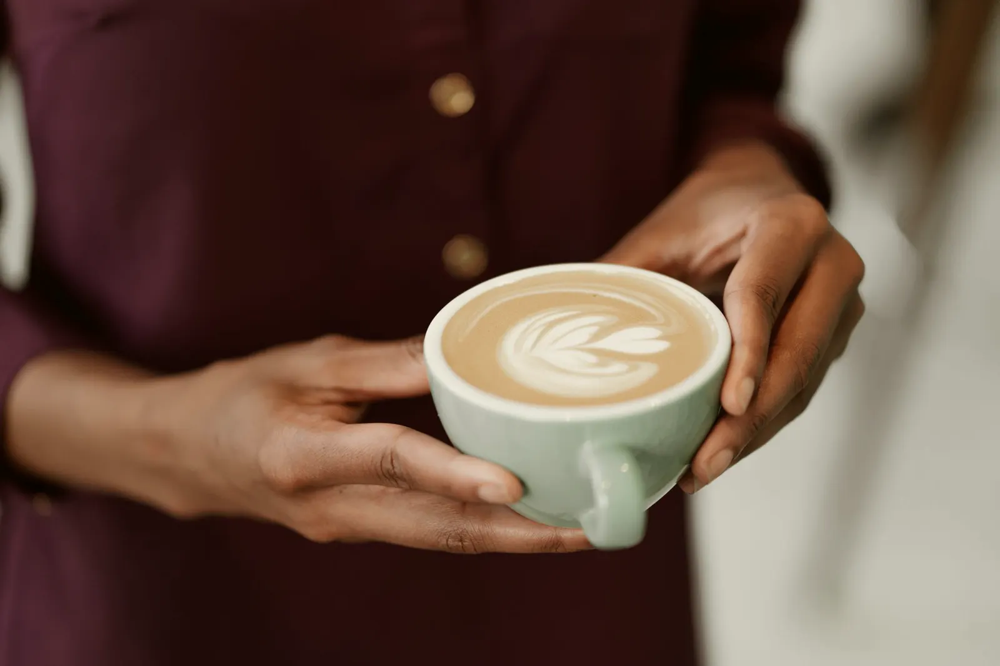
Quem fica mais um pouco.
Meu escritório favorito tem cheiro de café.
Vim pelo croissant. Fiquei pelo resto da tarde.
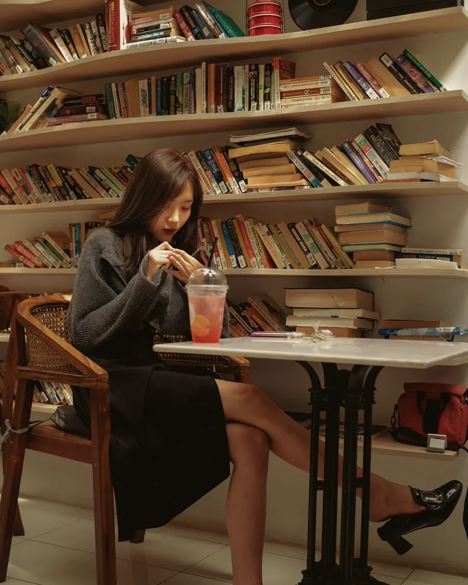
Depoimentos fictícios, escritos como conteúdo conceitual deste projeto.
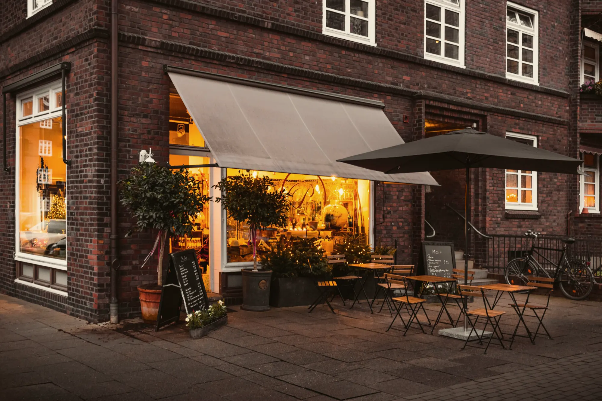
Tem lugar para mais um café.
Endereço
Rua das Flores, 128
Centro, Florianópolis, SC
Horários
- Segunda a sexta
- 08h às 19h
- Sábado
- 09h às 18h
- Domingo
- Fechado
Ver no mapa (abre em nova aba)
Café Vagar. Fique mais um pouco.